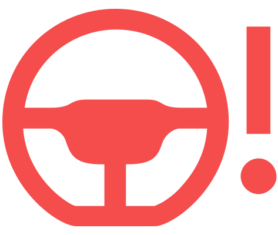
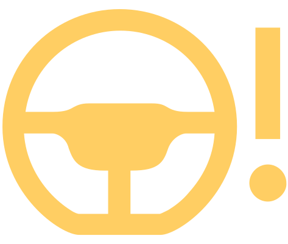

Défaut de la direction assistée

est allumé - défaillance totale de la direction assistée, défaillance de l’assistance de la direction
Couper et remettre le contact et conduire quelques mètres.
Si le voyant ne s’éteint pas, ne poursuivez pas la route. Faites appel à l’assistance d’un atelier spécialisé.

est allumé - défaillance partielle de la direction assistée, réduction possible de la direction assistée
Couper et remettre le contact et conduire quelques mètres.
Si le voyant ne s’éteint pas, il est possible de continuer à conduire avec prudence. Faites appel à l’assistance d’un atelier spécialisé.
Défaut du verrouillage de la colonne de direction
clignote
Message concernant un défaut dans le verrouillage de la colonne de direction
Stationner le véhicule en toute sécurité.
Faites appel à l’assistance d’un atelier spécialisé.
Après avoir coupé le contact, il n’est plus possible d’allumer le contact, de verrouiller la direction et d’allumer les consommateurs électriques.
clignote
Message concernant un défaut dans le verrouillage de la direction
Il est possible de continuer à conduire avec précaution. Faites appel à l’assistance d’un atelier spécialisé.
Verrouillage de la colonne de direction non débloqué
clignote
Message concernant le déplacement requise de la colonne de direction
Déplacer légèrement le volant vers l’avant et vers l’arrière.
Si la direction ne se déverrouille pas, immobiliser le véhicule dans un endroit sûr et faire appel à un atelier spécialisé.